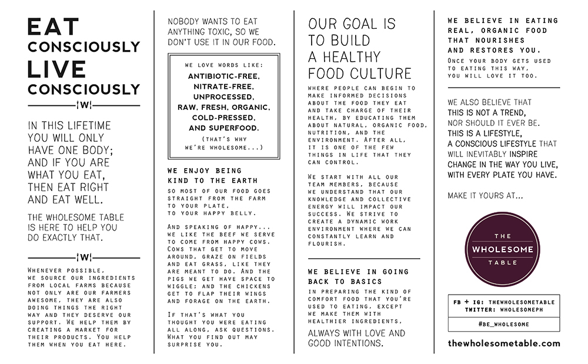

The Wholesome Table is an organic restaurant that aims to help you change the way you eat - one plate at a time.
We believe in going back to basics in preparing the kind of comfort food that you're used to eating, except we make them with healthier ingredients, always with love and good intentions.
Restauranteur Bianca Araneta-Elizalde and husband Juan Elizalde share a wholesome experience with its diners in he hopes of inspiring them to follow a healthier lifestyle. With food made only from fresh, natural and organic ingrdients. The Wholesome Table inspire a change in the way people live, with every plate they have.
Wholesome Food
Restauranteur Bianca Araneta-Elizalde and husband Juan Elizalde share a wholesome experience with its diners in he hopes of inspiring them to follow a healthier lifestyle.
With food made only from fresh, natural and organic ingrdients.
The Wholesome Table inspire a change in the way people live, with every plate they have.
View The Menu
Who We Are and What We Do
All our produce comes from organic sources. We use meat from grass fed cows that are raised without artificial hormones and antibiotics. All our sauces and condiments are natural and made from scratch. You wont find high fructose corn syrup or any artificial colors, flavors, sweeteners, additives and preservatives in any of our food and drinks.
These are just a few of the claims in the manifesto that makes up the first page of The Wholesome Table’s menu.
“It’s really about where you’re getting your food, what are the chemicals present in that food, how processed it is, what are the additives that are in there that are wreaking havoc to your system,” rattles off Bianca Araneta-Elizalde who is looking forward to sharing her healthy lifestyle with the rest of Manila.
And so last July, The WholesomeTable opened its doors with the goal of going back to basics and working with fresh, clean food, that’s free from toxins.
“There is a misconception that organic food is, number one vegetarian only, and two, it’s bland,”. The Wholesome Table corrects this misconception by offering tasty meat and plant-based comfort food. “I figured Filipinos will enjoy this because they can still have the many dishes that they’re used to eating such as burgers, pork, and pizza but they’re less guilty because they’re coming from good sources and made with better and healthier ingredients,” she points out.
